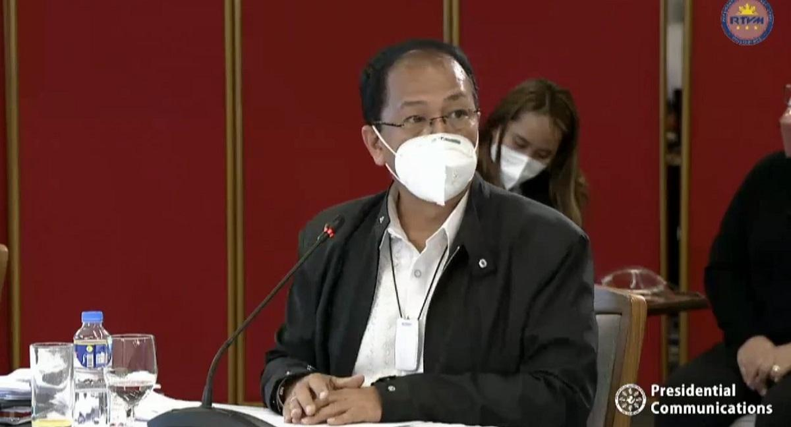

|

The Philippines is hopeful that it will be able to sign an agreement for a supply of coronavirus vaccines from American drugmaker Johnson & Johnson this week or the next, vaccine czar Secretary Carlito Galvez Jr. said Thursday.
“We are finalizing the language of the Johnson & Johnson [agreement] and hopefully we’ll have the signing this week or next week,” he told CNN-Philippines in a mix of English and Filipino.
Galvez also said the single-dose jab developed by Janssen, Johnson & Johnson’s pharmaceutical arm, could be included in the portfolio of vaccines that will be donated to the country by the COVAX Facility, a global initiative for equitable vaccine access.
Janssen’s Phase 3 clinical trial for its COVID-19 vaccine is currently underway in several areas across the Philippines.
The vaccine showed 66% efficacy in preventing COVID-19 in a large global trial against several coronavirus variants.
It is also 85% effective against severe COVID-19 and prevents hospitalization 28 days after immunization.
The Philippines has vaccinated 240,297 health workers as of Tuesday, three weeks since it launched its vaccination program.
|
|
 AJCE News
AJCE News